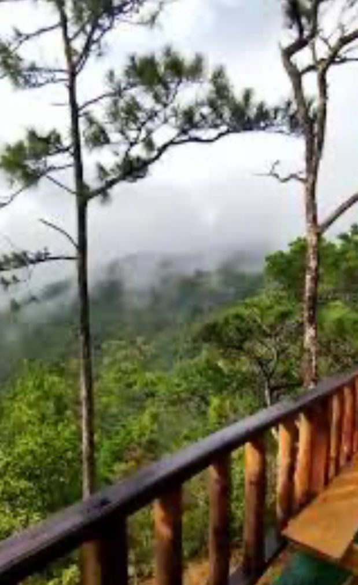

La Garnacha
1¿Por qué visitar la Garnacha?
La Garnacha es una comunidad y reserva natural, donde se encuntra una cultura totalmente diferente que te encantara conocer.
2¿Qué ofrece la Garnacha?
Ofrece el primer atractivo que es la fábrica de queso, donde se fabrican diferentes tipos de queso, esta un taller de artesanías El Gavilán, donde trabajan con piedra zopilota, que se encuentra solamente en la zona norte de Nicaragua, cuenta con un mirador al Cerro Apaguajil, la cueva de los duendes y una vista impresionante al Pacífico de Nicaragua.
Servicios
Diferente cultura
Al aire libre


Vista bonita
Cultura
Despejo de la mente
Muralismo
Piensa tranquilamente
Una nueva experiencia